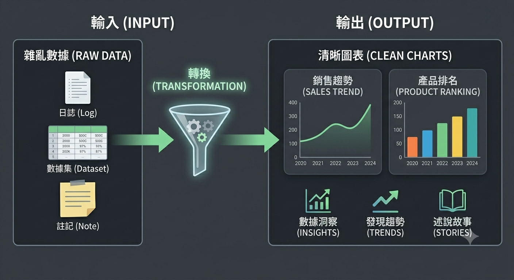

資管視角：從資料到決策的橋樑

在資訊管理領域，資料不僅是靜態的記錄，它們是能驅動決策的關鍵資產。良好的資料處理流程（包含清理、整合與驗證）會直接影響到分析結果的可靠性與可解釋性。
我常用的流程是先以 SQL 抽取資料，接著用 Python 與 Pandas 清理，再使用視覺化工具或前端圖表庫（例如 Chart.js 或 D3）呈現，最後與利害關係人討論可執行的商業策略。
如果你對某個專題想更深入討論（例如 A/B 測試、特徵工程或資料倉儲設計），歡迎聯絡我或留言，我可以把相關程式碼片段與範例資料公開在 GitHub。